Client
Nederlands Dans Theater
Role
Website Designer
Duration
± Two Weeks
Tools
Figma + Adobe Creative Suite
La Petite Mort balances the expressive to interest the User and the functional to convey rudimentary information about the featured event. The end goal of the microsite itself is to lead the User to purchase a ticket. In order to achieve this end goal, the microsite has a clear purchasing form and an order summary that follows them throughout the checkout process.

Billets (Ticket) Page in La Petite Mort
Empathize + Understand Your User
The Nederlands Dans Theater is a Dutch contemporary dance company, whose original intention is to move away from the more traditionally oriented Dutch National Ballet (Het Nederlands Ballet) and focus on experimentations of alternating dance forms and techniques. The team decided to engage in the company's intention and focus on experimental design likewise.
Make Design Decisions
My design decisions take into account human considerations, from ergonomics to cognitive capabilities of the user, and our art direction. The team communicated their critique and I reiterated my wire-framing. After the wire-framing was accepted as satisfactory, I created the interactive prototypes in Figma.
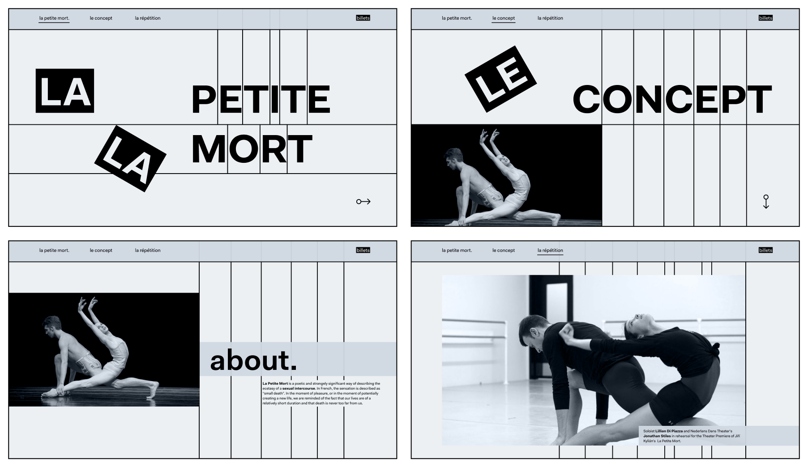Initial Wireframes for Art Curator
Engaging Interaction
I opted for a static navigation bar, as it provides the user with a more accessible overview of the content. A static navigation bar provides clear interaction options to the user, allowing them to clarify what content could be anticipated from the site. I tied user navigation to the reconstruction of typography, acting as an affordance to encourage further scrolling. The user is able to scroll up and down to either deconstruct or reconstruct typographic elements.
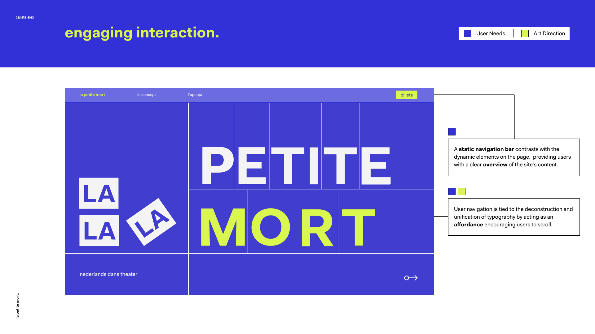 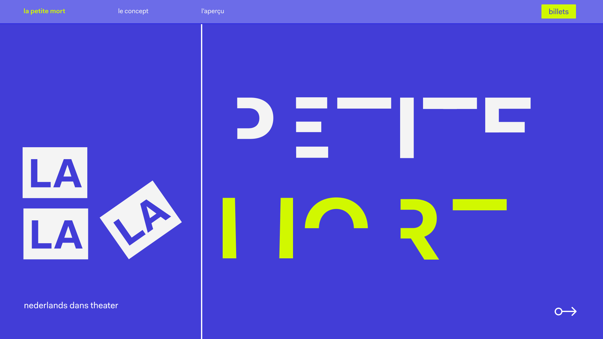Reconstruction of Typographic Elements in Home Page
Typographic Compartmentalization
I decided to split each page into clear quadrants, in order to organize the information displayed. The quadrants break up the user's field of view into manageable chunks, while also separating the composition into dynamic thirds.
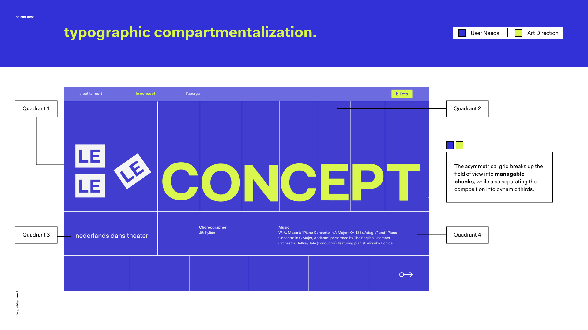 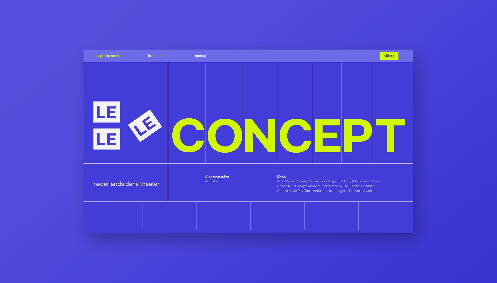Le Concept (Concept) Page in La Petite Mort
Surfacing The Grid
I employed a surfaced gird that is used consistently throughout the site. The grids created an asymmetry and visual rhythm within the page. I adjusted their line weight to pull less visual heaviness from the titles and content. Thin grid lines are surfaced to anchor the text for readability or are intentionally broken to add a dynamic feeling to the composition.
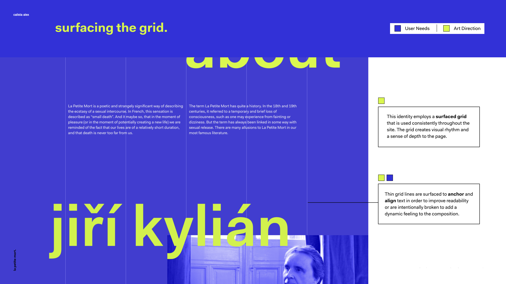 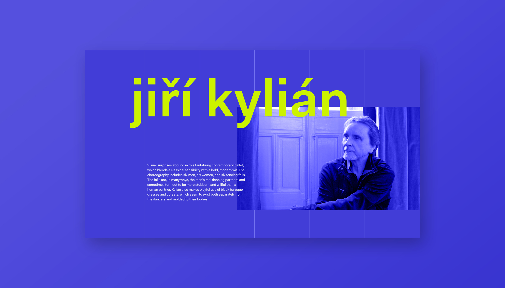Anchored Information in Le Concept (Concept) Page
Compelling Previews
I synthesized that one of the user's real needs is to get a taste of what they can expect at the show before committing to the purchase of tickets. In order to prioritize this need, the rehearsal clips pop up and play on hover, allowing the user to view the content within one interaction. The user does not need to wait for the content to load or navigate to another page. Additionally, I designed the rehearsal sections to turn green on hover and elements on the page to flexibly move through different cells to communicate interactivity.
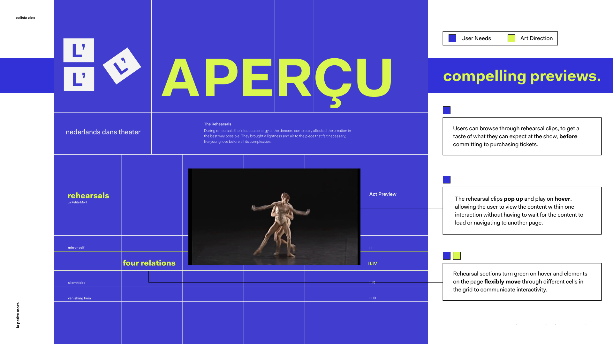 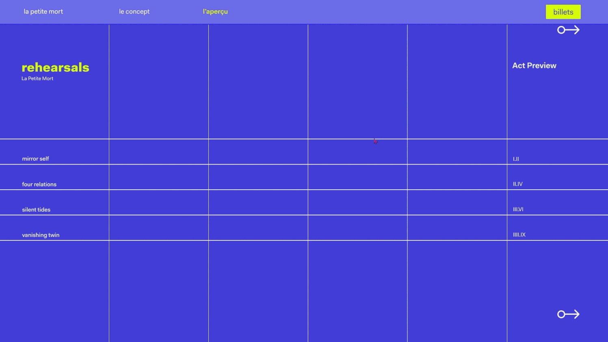Hover Effect in L' Aperçu (Rehearsals) Page
Transition From Print To Digital
Transitioning from print to digital required a more careful consideration of the balance between experimental components and usability considerations. The team used expressive elements and interactions in the earlier parts of the user’s journey to create intrigue about the show, with the goal of ushering users to the ticket page. Once the user’s goal shifts to wanting to purchase a ticket, they are met with a checkout process that is straightforward, yet maintains the art direction principles.
Reducing Cognitive Load
The order summary follows the user down the page and maintains visibility across pages, allowing them to review and keep track of changes to their purchase. I adjusted the field titles to move up above the boxes on input, in order to reduce cognitive load for the user. I decided on the color bright chartreuse for the CTA buttons, as it creates visual hierarchy for the primary action within the page.
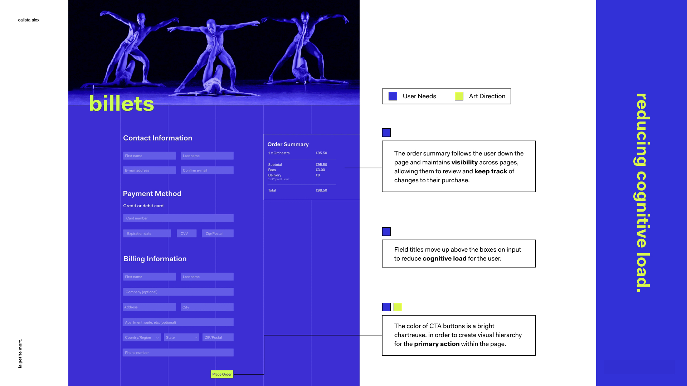 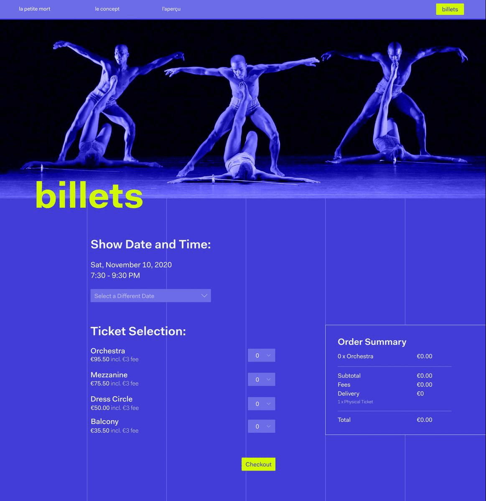Selecting A Ticket in Billets (Ticket) Page
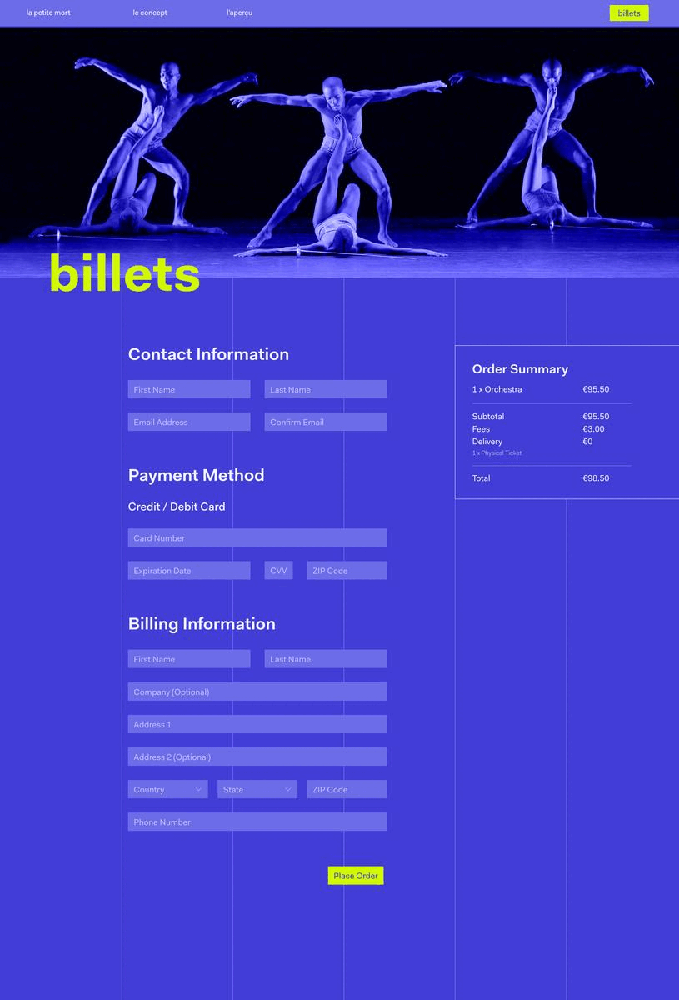Filling User Information in Billets (Ticket) Page
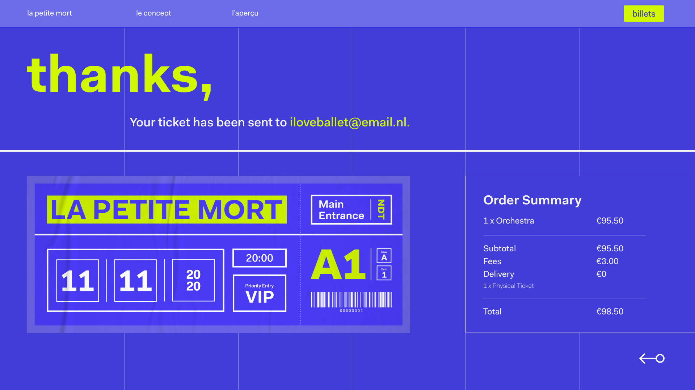Order Confirmation After Purchasing a Ticket in Billets (Ticket) Page
Implement
The implementation of La Petite Mort and animated GIFs of the prototyping can be found in this Keynote File.
Takeaways
My design decisions throughout are based on the goal of leading the user into the purchase of a ticket. These decisions demonstrate the significance of user-centered design and that User is King. I am convinced that a good design is one that allows its user to perceive possible cues on the appropriate action to be taken.